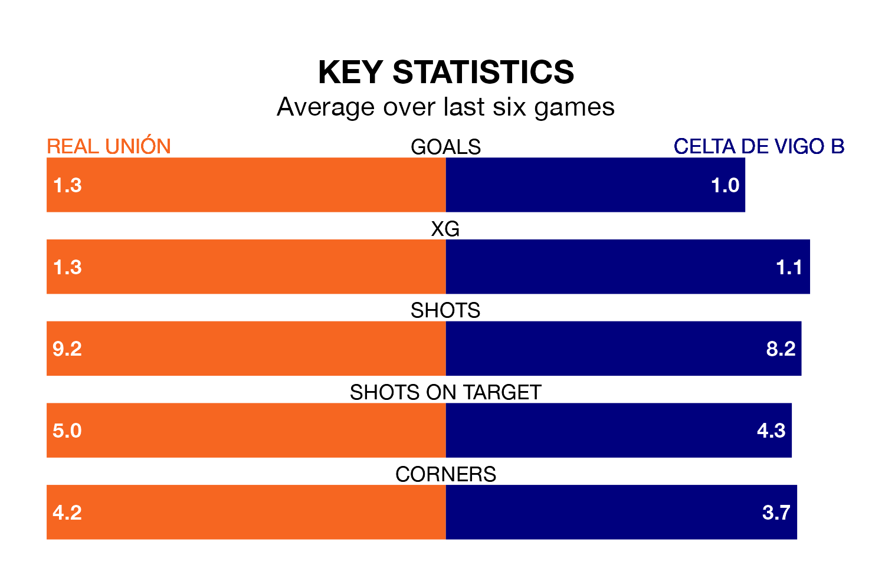

Sunday's early match between Real Unión and Celta de Vigo B promises to be one for the neutrals, as two of Primera Division RFEF Group 1's most free-scoring sides go head-to-head.
Ahead of the game at the Estadio Gal, Unión and Celta sit joint-third and top in the goal-scoring charts, with 31 and 39 goals respectively.
Iván Pérez Cuevas and Alejandro Cerdá Agulló lead the way for the home side, having bagged one goal each in their 23 games to date.
And Pablo Durán Fernández has been the main man in the opponents' penalty box for Celta, with one goal.
Unión are in mixed form in Primera Division RFEF Group 1, with two wins and two draws from their last six games.
With a win and a draw over that period, Celta's form is worse – they have taken four points from 18, compared to the home team's eight.
The visitors are fifth in the table after 23 games, of which they have won 12 and drawn three, earning 39 points.
Unión are eight places behind Celta in 13th, with eight wins and five draws putting them on 29 points.
In the last three years, Unión and Celta have played each other on three occasions. Unión won one of them and Celta the other.
Their last meeting was on October 14, when Celta won 3-0 at home.
Unión's last match was on February 10, a 2-1 loss against Gimnàstic de Tarragona.
Celta drew 3-3 with CD Teruel last time out, also on February 10, with Durán Fernández, Fernando López González and Miguel Román González on the scoresheet.
Updated: 09:02 (UTC), 13/02/24